Topic 7.15 · Coordinates, Graphs and Inequalities · Lesson 7 of 7
Reflecting in Lines
A mirror line on a grid can be any horizontal or vertical line, not just an axis. Today you reflect shapes in lines such as x = 2 and y = -1, then pull the whole topic together.
By the end you’ll know…
The lines x = a and y = b can act as mirror lines.
Reflecting in a vertical line x = a leaves y-coordinates unchanged and moves each point to the same distance the other side of the line.
Reflecting in a horizontal line y = b leaves x-coordinates unchanged.
A point lying on the mirror line does not move.
By the end you can
G3Reflect a shape in a horizontal or vertical line given by its equation.
G5Solve mixed problems combining inequalities, coordinates, graphs and factorising.
Work down the page at your own pace. Write every answer in your book first, then click to check it.
01
Do Now
About 5 minutes
1
How many lines of symmetry does a rectangle have?
2.
2
How many lines of symmetry does a square have?
4.
3
A point is 3 squares to the left of a vertical mirror line. Where is its reflection?
3 squares to the right of the line.
4
When a shape is reflected, does its size change?
No: its size and shape stay the same.
Remember these?
LAST LESSONFactorise 6x + 18.
6(x + 3).
LAST WEEKWrite the inequality for "x is greater than -3 and at most 2".
-3 < x ≤ 2.
LAST TERMSimplify 3a × 2 + 4a.
6a + 4a = 10a.
LAST YEARThe point (2, 3) moves 4 squares to the right. Write its new coordinates.
(6, 3).
02
Learn: Lines as mirrors
Read each card, then follow the worked examples one step at a time.
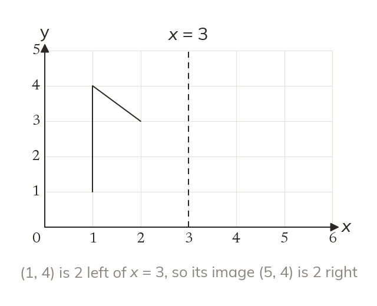
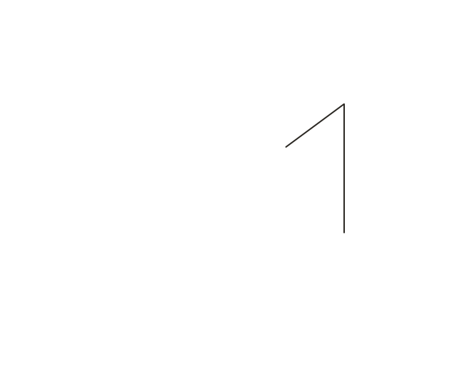
Lines as mirrors
Lines like x = a and y = b can be mirror lines too. Each image point is the same distance from the mirror, on the other side.
The lines x = a and y = b can act as mirror lines, not just the axes. Each point of the image is the same distance from the mirror line as the original, on the other side. Reflecting in a vertical line leaves every y-coordinate unchanged.
WORKED EXAMPLE A
Reflect the flag in the line x = 2.
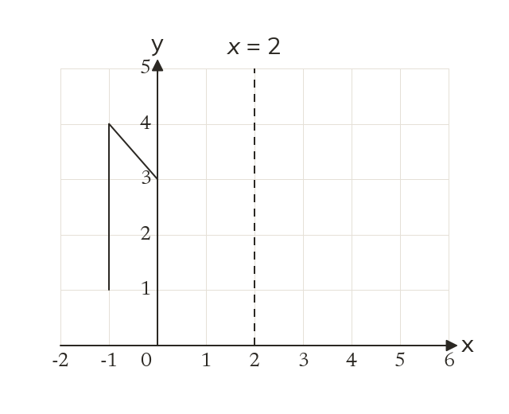
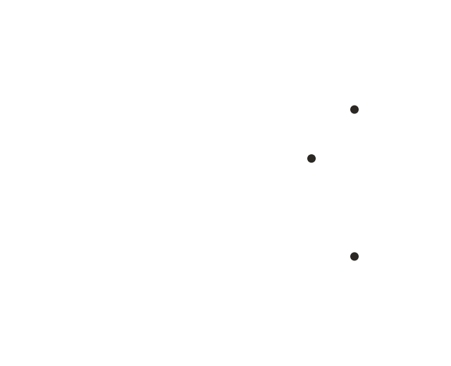
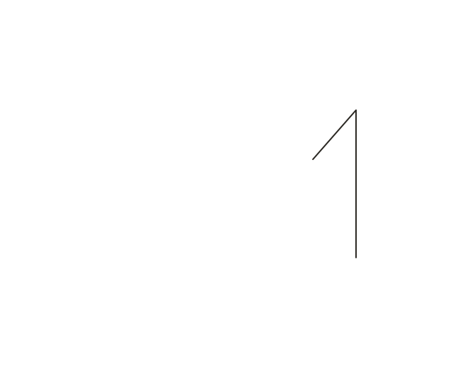
(-1, 1) to (5, 1) and (-1, 4) to (5, 4): 3 left of the line becomes 3 right
(0, 3) to (4, 3)
Jointhe image flag
WORKED EXAMPLE B
Reflect the flag in the line y = 1.
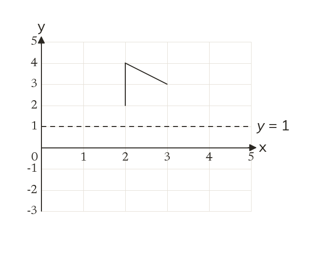
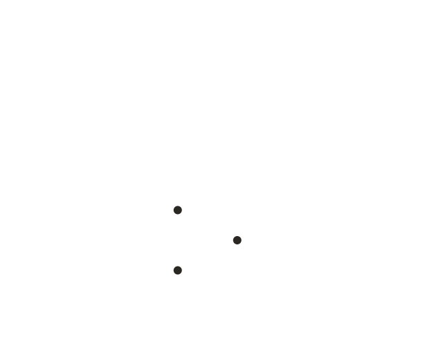
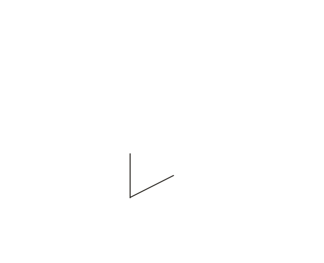
(2, 2) to (2, 0) and (2, 4) to (2, -2): x stays the same
(3, 3) to (3, -1)
Jointhe image flag
YOUR TURN · a
Reflect the point (2, 5) in the line x = 5.
(8, 5).
YOUR TURN · b
Reflect the point (4, 3) in the line y = -1.
(4, -5).
03
Check your understanding
Pick an answer. If it's wrong, the feedback tells you which mistake it was.
A point is reflected in a vertical line x = a. Which coordinate stays the same?
Not quite. A vertical mirror flips left and right, so x changes; y stays.
Yes. The point moves straight across, so its height, y, stays the same.
Not quite. Reflecting flips the point, so x changes; y stays.
Not quite. Moving straight across keeps y the same.
Reflect (2, 3) in the line x = 4.
Yes.2 is 2 left of x = 4, so the image is 2 right: (6, 3).
Not quite.x = 4 is vertical, so the point moves across, not up.
Not quite. Reflect in x = 4, not the y-axis: (6, 3).
Not quite. The image is as far past the line as the point is before it: 2 each side.
Reflect (5, -2) in the line y = 1.
Not quite. Reflect in y = 1, not the x-axis: (5, 4).
Not quite.y = 1 is horizontal, so x stays 5; the point moves up.
Not quite.−2 is 3 below y = 1, so the image is 3 above: y = 4.
Yes.−2 is 3 below the line, so the image is 3 above: (5, 4).
04
Practise
mark as you go
Checkpoint. Reflect the triangle with corners (1, 1), (3, 1) and (1, 2) in the line x = 4, and write down the corners of its image.Show your teacher before you go on
(a, 2) is reflected in the line x = 3 to give (7, 2). Find a.
7 is 4 right of x = 3 a is 4 left: a = -1
05
Learn
Read each card, then follow the worked examples one step at a time.
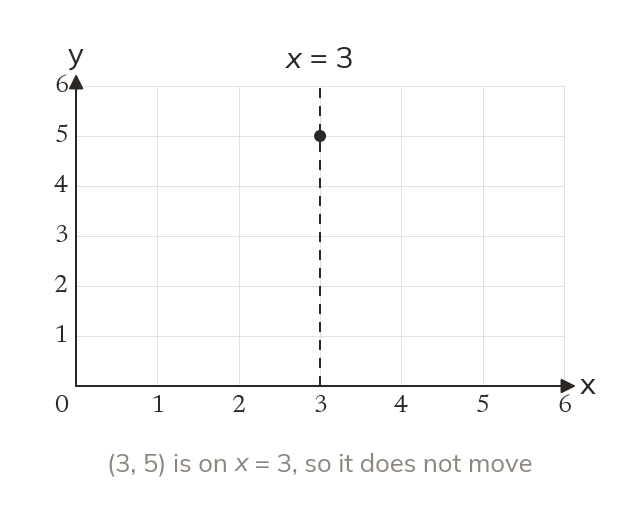
A point on the mirror
A point on the mirror line does not move.
A point that lies on the mirror line does not move when it is reflected. So the image of (3, 5) in the line x = 3 is (3, 5) itself.
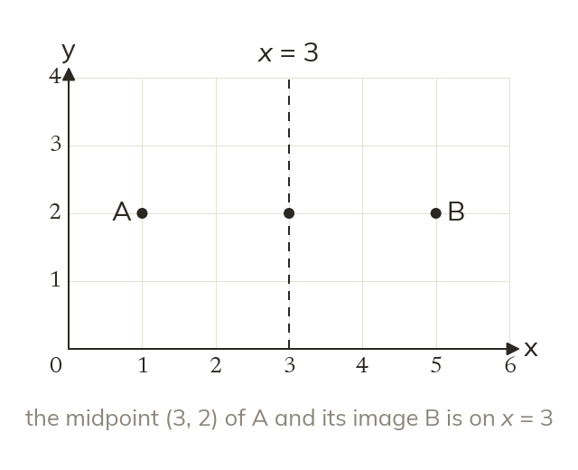
Combining ideas
The mirror line passes through the midpoint of every point and its image. So a reflection can be checked with a midpoint, joining two of the topic's ideas.
WORKED EXAMPLE C
A(1, 6) is reflected in x = 4 to give B. Find B and the midpoint of AB.
Reflect AB = (7, 6), 3 right of the line as A is 3 left
Average the x-values(1 + 7) ÷ 2 = 4
Midpoint of AB(4, 6)
WORKED EXAMPLE D
Points to the right of x = 2 have x-coordinates satisfying an inequality. Write it, and list the integers from 0 to 5 that satisfy it.
Write the inequalityx > 2
Integers3, 4, 5
YOUR TURN · c
Reflect (-2, 3) in the line x = 1, then find the midpoint of the point and its image.
The image is (4, 3), and the midpoint is (1, 3).
YOUR TURN · d
The line y = 3 is reflected in the x-axis. Write the equation of its image.
y = -3.
06
Check your understanding
Pick an answer. If it's wrong, the feedback tells you which mistake it was.
Which point does not move when it is reflected in the line x = 2?
Not quite.x = 2 is vertical. (5, 2) has x = 5, so it's off the line.
Yes.(2, 5) is on the line x = 2, so it stays put.
Not quite.(1, 5) is 1 away from the line, so it moves to (3, 5).
Not quite.(−2, 5) is 4 away from x = 2, so it moves.
A(1, 3) is reflected to (7, 3). What is the mirror line?
Not quite. Only x changed, so the mirror is vertical: x = something.
Not quite. The mirror is halfway between 1 and 7: x = 4.
Not quite.6 is the distance moved. The mirror is halfway: x = 4.
Yes. Halfway between x = 1 and x = 7 is x = 4.
The line shown is reflected in the y-axis. What is its image?
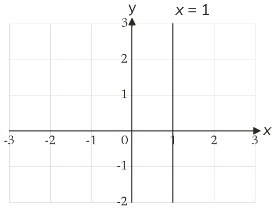
Yes.x = 1 is 1 right of the y-axis, so its image is 1 left: x = −1.
Not quite. Reflecting in the y-axis keeps it vertical: x = −1.
Not quite. It's 1 away from the y-axis, so it moves to the other side: x = −1.
Not quite. A vertical line stays vertical: x = −1.
07
Practise
mark as you go
Checkpoint. Reflect A(2, -1) in the line y = 2 to give B. Find B, the midpoint of AB, and the equation of the line through A and B.Show your teacher before you go on
1
A(1, 3) is reflected in x = 3 to give B. Find B and the midpoint of AB.
B(5, 3) Midpoint: (3, 3), on the mirror line
2
(6, -1) is reflected to (6, 7). What is the mirror line?
Halfway: (-1 + 7) ÷ 2 = 3 y = 3
3
The line x = 3 is reflected in the y-axis. Write the equation of its image.
x = -3
4
Write an inequality for the y-coordinates of points above y = 2. List the integers from 0 to 5 that satisfy it.
y > 2 3, 4, 5
5
Factorise 4x + 12. Then solve 4x + 12 > 20.
4x + 12 = 4(x + 3) 4x > 8, so x > 2
6
Find the equation of the line through (2, -3) and (2, 5), and the midpoint of the two points.
x = 2 Midpoint: (2, 1)
EXT
The rectangle (1, 1), (5, 1), (5, 3), (1, 3) is reflected in the x-axis. Find the image's corners and the equation of its top side.
(1, -1), (5, -1), (5, -3), (1, -3) Top side: y = -1
08
Exit ticket
On paper, on your own, then check
1
A point is reflected in the line y = 3. Which coordinate stays the same, and why?
The x-coordinate: the point moves straight up or down across the horizontal line.
2
Reflect (6, 2) in the line x = 4.
(2, 2).
3
(0, 5) is reflected in the line y = 1. Find its image, and the midpoint of the point and its image.
The image is (0, -3), and the midpoint is (0, 1).
Finished? Next lesson: 7.16.1 Decimal Place Value and Rounding.
Practise more
After the lesson, or whenever you want more
Dr Frost
Log in, then search for a code to practise that skill.
278aReflect a shape against a vertical or horizontal line with a given equation.
153bReflect a shape in a vertical or horizontal line drawn on axes.
265bFind the midpoint of two points given as coordinates.